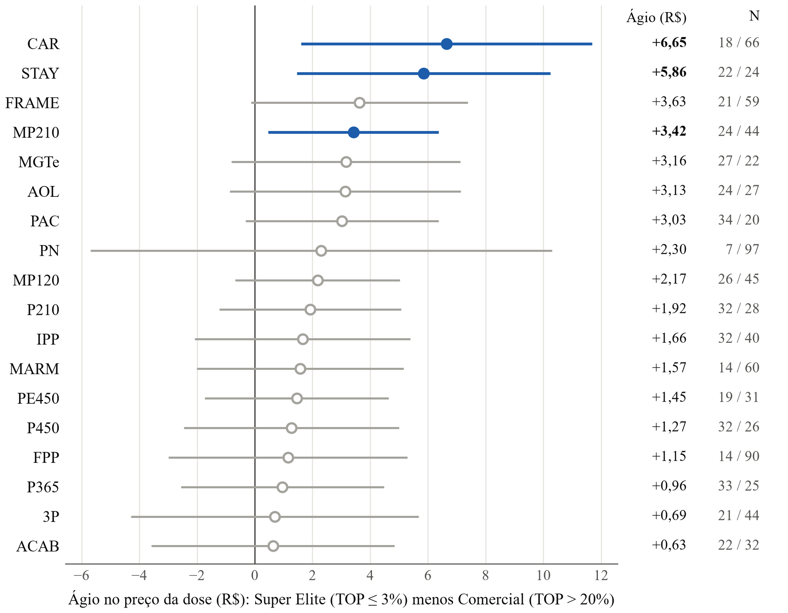
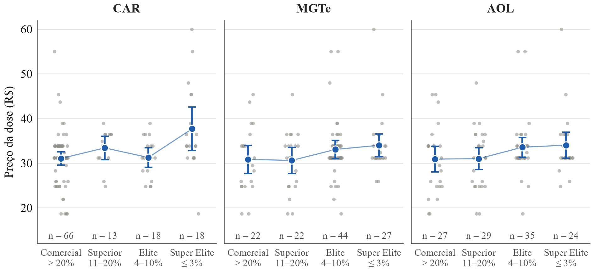
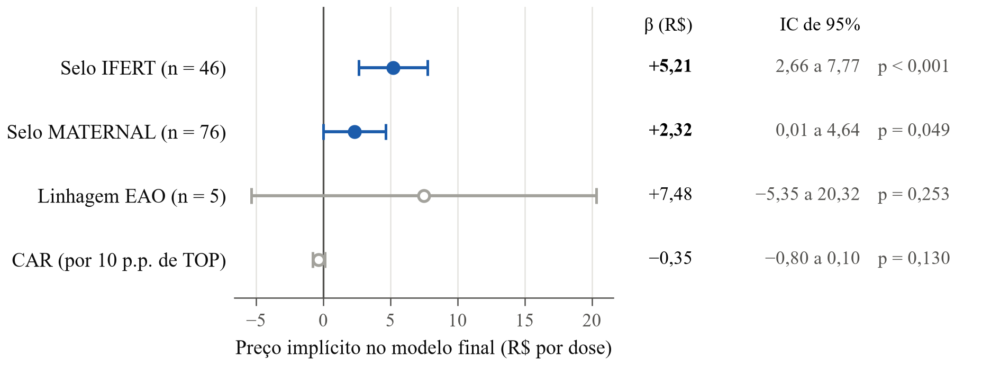
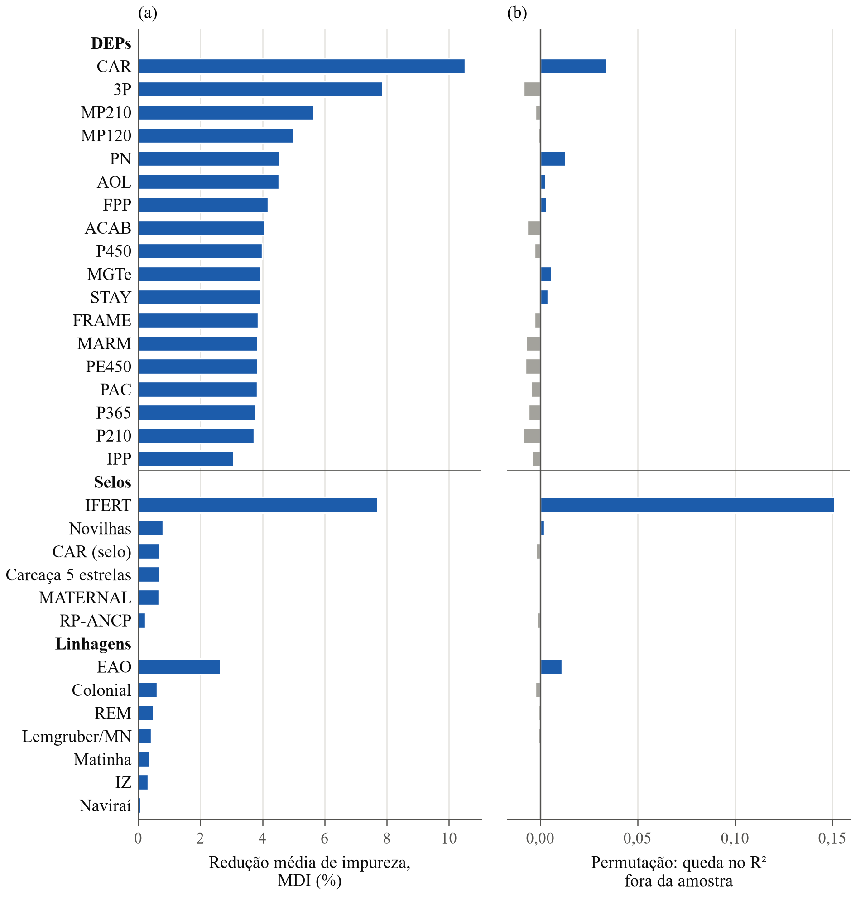

INFLUÊNCIA DAS DIFERENÇAS ESPERADAS NA PROGÊNIE NA PRECIFICAÇÃO DO SÊMEN BOVINO
(1) Estudante, Instituto Federal do Triângulo Mineiro, IFTM, Uberaba, MG, Brasil, rafaelalves.santos@estudante.iftm.edu.br;
(2) Professor, Instituto Federal do Triângulo Mineiro, IFTM, Uberaba, MG, Brasil, sandroribeiro@iftm.edu.br.
Resumo
Este trabalho, vinculado ao curso de Especialização em Ciência de Dados do IFTM, na linha de pesquisa Aprendizado de Máquina, insere-se na aplicação da ciência de dados ao agronegócio. Não se sabe quanto o preço do sêmen reflete as provas genéticas. O objetivo geral foi analisar a relação entre as Diferenças Esperadas na Progênie (DEPs), os selos comerciais e as linhagens e o preço da dose de sêmen convencional de touros Nelore. Os objetivos específicos foram ranquear esses atributos pelo Random Forest, estimar seus preços implícitos por regressão hedônica e comparar as três dimensões. A pergunta norteadora foi: em que medida as DEPs influenciam o preço da dose, e qual a contribuição dos selos e das linhagens? Partiu-se da hipótese de que touros com melhores DEPs têm doses mais caras. A pesquisa, quantitativa e documental, utilizou dados coletados por web scraping do catálogo da CRV Lagoa em setembro de 2026: 115 touros com avaliação da ANCP e preço válido. O quadro teórico baseou-se na Teoria dos Preços Hedônicos (ROSEN, 1974) e no Random Forest (BREIMAN, 2001). A análise combinou Random Forest, regressões hedônicas com erros-padrão robustos, critério de Akaike e validação cruzada. As 18 DEPs explicaram pouco do preço; a única significativa em conjunto, o consumo alimentar residual, perdeu significância na forma linear diante dos selos, mas, em análise exploratória, o ágio dos 3% melhores persistiu. No modelo final (R² = 28,6% na amostra), foram significativos o selo de fertilidade (+R$ 5,21) e, no limite da significância, o de habilidade materna (+R$ 2,32), e nenhuma linhagem apresentou efeito robusto; fora da amostra, o poder preditivo foi baixo. Conclui-se que o selo de fertilidade pesa mais que as provas genéticas no preço. Por utilizar apenas dados públicos, a pesquisa não foi submetida ao Comitê de Ética em Pesquisa.
Palavras-Chave: Aprendizado de máquina; Bovinocultura de corte; Diferença Esperada na Progênie; Preços hedônicos; Random Forest.
Introdução
O agronegócio respondeu por 23,2% do Produto Interno Bruto (PIB) brasileiro em 2024 (CNA, 2025), e o Brasil era, em 2022, o segundo maior produtor e o maior exportador mundial de carne bovina (BASSO; NEVES; GROSSI-DE-SÁ, 2024). Nesse setor, a inseminação artificial é uma das biotecnologias mais utilizadas para aumentar o ganho genético dos rebanhos, e seu mercado no país passou de cerca de 7,0 milhões de doses de sêmen comercializadas em 2002 para 24,7 milhões em 2023, quando 20% a 23% das fêmeas do rebanho nacional foram inseminadas (SALES et al., 2024).
A escolha do touro e, portanto, da dose de sêmen é orientada pelas provas genéticas, expressas pelas Diferenças Esperadas na Progênie (DEP), estimativas do potencial genético do animal que permitem decisões de seleção mais precisas do que as medidas fenotípicas isoladas, por removerem a variação devida ao ambiente (THOMPSON et al., 2022). A seleção baseada em DEPs reduz o risco e aumenta o progresso genético, e os índices de seleção permitem selecionar para lucratividade a partir de um único valor (ROWAN, 2022). Na raça Nelore, a Associação Nacional de Criadores e Pesquisadores (ANCP) disponibiliza o Mérito Genético Total Econômico (MGTe), um índice bioeconômico, e as avaliações também são apresentadas na forma de percentil (TOP%), que indica a posição do animal em relação ao total de avaliados (SILVEIRA, 2022).
Apesar da relevância técnica das DEPs, o preço do material genético não depende apenas delas. Pela Teoria dos Preços Hedônicos, o preço de um bem diferenciado reflete os preços implícitos de seus atributos, revelados a partir dos preços observados e das quantidades de características associadas a cada produto (ROSEN, 1974). Estudos com touros de corte indicam que as DEPs têm ganhado importância na formação do preço, mas nem todas as provas genéticas se convertem em preço: as DEPs de peso ao nascer e de área de olho de lombo afetaram o preço de touros, enquanto as DEPs genômicas, em geral, não (THOMPSON et al., 2022). No mercado de sêmen, entre as características genéticas de touros leiteiros no Brasil, apenas a capacidade prevista de transmissão para volume de leite apresentou ágio (CARVALHO et al., 2022). Além das provas genéticas, os catálogos das centrais de inseminação trazem selos comerciais e a linhagem de cada touro, e, em leilões de touros no Brasil, o preço também se relacionou ao tempo de atuação do leilão e à reputação do vendedor (LOPES et al., 2023).
Investigar essa relação exige analisar conjuntamente dezenas de atributos por touro, o que aproxima o problema da ciência de dados, entendida como a tomada de decisão baseada em dados a partir do tratamento de grandes volumes de dados brutos para transformá-los em informação de valor (AMARAL et al., 2024). Na pecuária de corte, em estudo relatado por Amaral et al. (2024), o Random Forest superou a regressão linear múltipla na previsão da produção e da qualidade dos bovinos e permitiu quantificar a importância relativa de cada fator. Esse algoritmo fornece estimativas internas da importância de cada variável (BREIMAN, 2001) e, na avaliação de preços de imóveis, superou os modelos hedônicos em capacidade preditiva, enquanto estes forneceram a evidência estatística que sustenta a interpretação dos resultados (AN et al., 2025). A regressão hedônica, por sua vez, quantifica o preço implícito de cada atributo. A combinação das duas abordagens permite identificar quais provas genéticas e demais atributos dos catálogos se relacionam ao preço do sêmen, aplicação ainda pouco explorada para touros de corte no Brasil. Assim, a pergunta que norteia este estudo é: em que medida as provas genéticas, expressas pelas DEPs, influenciam o preço da dose de sêmen de touros Nelore, e qual a contribuição dos selos comerciais e das linhagens nessa formação de preço?
O objetivo deste estudo foi aplicar técnicas de ciência de dados, combinando o algoritmo de aprendizado de máquina Random Forest e modelos de preços hedônicos, para analisar a relação entre as provas genéticas (DEPs da ANCP), os selos comerciais e as linhagens e o preço da dose de sêmen convencional de touros Nelore comercializados pela central CRV Lagoa.
Material e Métodos
Obtenção e Estruturação da Base de Dados
Os dados utilizados neste estudo foram extraídos do catálogo comercial digital de reprodutores da raça Nelore disponibilizado pela central de inseminação artificial CRV Lagoa (Sertãozinho, SP). A coleta automatizada dos dados (web scraping) foi implementada em linguagem Python (versão 3.11), com as bibliotecas requests e BeautifulSoup, em setembro de 2026, capturando informações fenotípicas, comerciais, genealógicas e avaliações genéticas de cada reprodutor.
A amostra final foi delimitada aos touros Nelore com avaliação genética oficial conduzida pela Associação Nacional de Criadores e Pesquisadores (ANCP), totalizando N=115 reprodutores ativos com informações zootécnicas e comerciais completas, o que evita discrepâncias decorrentes de metodologias distintas de avaliação genética. Dos 120 touros com avaliação ANCP presentes no catálogo, foram excluídos um que não apresentava preço da dose convencional, um com preço igual a zero e três com valores extremos (de R$ 209,00 a R$ 346,50, contra o máximo de R$ 60,00 dos demais), para que poucos touros de elite não dominassem as estimativas.
Variáveis do Estudo e Fundamentação Hedônica
A análise fundamentou-se na Teoria dos Preços Hedônicos, segundo a qual o preço de um bem diferenciado reflete os preços implícitos de seus atributos (ROSEN, 1974). Neste estudo, o preço da dose foi relacionado a três grupos de atributos do catálogo:
em que:
- P é vetor dos preços das doses de sêmen convencional dos touros em reais (R$)
- é a matriz dos valores de ranque das DEP dos touros para as 18 características consideradas no estudo, expressos em percentis (%).
- é a matriz de incidência dos touros para os 6 selos considerados no estudo
- é a matriz de incidência dos touros para as 7 linhagens consideradas no estudo.
As 18 características cujos percentis das DEPs foram considerados neste estudo, agrupadas, em sua maioria, conforme a ANCP (SILVEIRA, 2022), foram: de Reprodução e Fertilidade, Probabilidade de Parto Precoce (3P_TOP), Idade ao Primeiro Parto (IPP_TOP), Perímetro Escrotal aos 450 dias (PE450_TOP), Produtividade Acumulada (PAC_TOP) e Probabilidade de Permanência no Rebanho, ou stayability (STAY_TOP); de Crescimento, Peso ao Nascer (PN_TOP), Peso aos 210, 365 e 450 dias (P210_TOP, P365_TOP e P450_TOP) e Habilidade Maternal para peso aos 120 e 210 dias (MP120_TOP e MP210_TOP); de Produtividade e Qualidade da Carne, Área de Olho de Lombo (AOL_TOP), Acabamento de Carcaça (ACAB_TOP) e Marmoreio (MARM_TOP); de Eficiência Alimentar, Consumo Alimentar Residual (CAR_TOP); além da Facilidade de Parto de Primíparas (FPP_TOP) e do escore de estrutura corporal, ou frame (FRAME_TOP), DEPs da ANCP posteriores a esse agrupamento, e do índice Mérito Genético Total Econômico (MGTe_TOP).
O uso do ranking percentil (TOP %) permitiu a padronização dimensional das variáveis em escala comparável de 0,1% a 100%, em que valores menores indicam superioridade genética no catálogo.
Na avaliação da influência das certificações no valor do sêmen, foram empregados selos de certificação concedidos pela central e programas parceiros à medida que os touros possuíam o respectivo mérito genético.
Para fins de análise, os selos foram tratados como variáveis binárias, com valor 1 quando o touro possuía o selo e 0 caso contrário, identificado pela correspondência exata do nome do selo no catálogo. Assim, os animais foram classificados com base em 6 selos:
- O SELO_IFERT, que certificava os touros como superiores para o Índice de Fertilidade.
- O SELO_MATERNAL, que certificava quanto a aptidão para produção de fêmeas de reposição.
- O SELO_CAR, que certificava quanto a eficiência alimentar por meio do critério do Consumo Alimentar Residual.
- O SELO_CARCACA_5_ESTRELAS, que certificava os touros com classificação máxima (cinco estrelas) quanto à qualidade e ao rendimento de carcaça.
- O SELO_NOVILHAS, que indicava os touros recomendados para uso em novilhas. Na amostra, os 29 touros com esse selo apresentaram mediana de TOP 13% para Peso ao Nascer e 7% para Facilidade de Parto de Primíparas, contra 88% e 79,5% nos demais touros.
- O SELO_RP_ANCP, que identificava os touros aprovados no Programa de Reprodução Programada (RP) da ANCP, teste de progênie criado em 1995 no qual os touros jovens passam por avaliação genética e vistoria técnica (REPRODUÇÃO [...], 2025).
Adicionalmente, para avaliar a relação entre o número de certificações e o preço da dose, foi criada e analisada a variável TOTAL_SELOS, que consistia na quantidade total de certificações por touro. Essa contagem considerou os 16 selos presentes no catálogo, inclusive os genéricos (como PO, PESO e REPRODUTIVO) e os de sistema de produção (EXTENSIVO, SEMIEXTENSIVO e SEMI-INTENSIVO), e variou de 3 a 9 certificações por touro.
A variável linhagem, assim como a anterior, também foi designada como binária no estudo. Essa variável foi criada com base na genealogia (pai, avô paterno e avô materno), na linhagem declarada e no afixo do criador. O touro recebia valor 1 em cada linhagem cujo afixo ou nome (por exemplo, EAO, REM, COL, MAT, MN ou IZ) constasse, como palavra inteira, em seu nome ou no nome do pai ou dos avôs, e 0 caso contrário. A variável indica, portanto, a presença do criatório na genealogia próxima, e não necessariamente a origem do próprio touro; um mesmo animal podia pertencer a mais de uma linhagem (42 touros) ou a nenhuma (10 touros). Neste estudo, foram consideradas 7 linhagens (Troncos), com o número de touros da amostra entre parênteses:
- TRONCO_EAO – Agropecuária EAO (5).
- TRONCO_REM – Genética Aditiva, afixo REM (67).
- TRONCO_NAVIRAI – Fazenda Chupim / Agropecuária Naviraí (3).
- TRONCO_MATINHA – Rancho da Matinha, afixo MAT (13).
- TRONCO_COLONIAL – Fazenda Colonial, afixo COL (29).
- TRONCO_LEMGRUBER_MN – Fazenda Mundo Novo (afixo MN) ou linhagem Lemgruber (22).
- TRONCO_IZ – Instituto de Zootecnia de Sertãozinho, afixo IZ (13).
Etapas da Análise
A análise foi conduzida em quatro etapas:
Etapa 1. Análise de cada dimensão isoladamente. As DEPs, os selos comerciais e as linhagens foram analisados separadamente, por estatística descritiva, pelo ranking de importância do Random Forest e por regressões hedônicas com todas as variáveis da dimensão (18 DEPs, 6 selos ou 7 linhagens). As variáveis com efeito significativo (p < 0,05, com erros-padrão robustos) foram levadas às etapas seguintes; como nenhuma linhagem foi significativa, essa dimensão foi representada pela linhagem de maior importância no Random Forest (EAO).
Etapa 2. Análise das dimensões aos pares. Foram estimados modelos com duas dimensões ao mesmo tempo (DEPs e selos; DEPs e linhagens; selos e linhagens), para verificar se o efeito de uma dimensão se mantém na presença da outra.
Etapa 3. Comparação dos modelos. Foram comparados os sete modelos possíveis com as três dimensões (três com uma dimensão, três com duas e um com as três), pelo R² e pelo Critério de Informação de Akaike (AIC).
Etapa 4. Modelo final e validação. O modelo com menor AIC entre os sete foi submetido ao diagnóstico dos resíduos e da multicolinearidade (Fator de Inflação da Variância – VIF), e o desempenho preditivo do Random Forest e dos modelos de regressão foi avaliado fora da amostra.
Algoritmo de Aprendizado de Máquina (Random Forest)
Aplicou-se o algoritmo supervisionado Random Forest Regressor (BREIMAN, 2001), um conjunto de árvores de decisão em que cada árvore é ajustada a uma amostra bootstrap dos dados e, em cada divisão, escolhe a melhor variável entre um subconjunto sorteado. Foram construídos conjuntos com 500 árvores de decisão (n_estimators = 500), semente pseudoaleatória fixada em random_state = 42 para assegurar reprodutibilidade, e seleção de subconjuntos de atributos pela raiz quadrada do total de variáveis (max_features = 'sqrt').
A importância relativa de cada variável na determinação do preço da dose foi mensurada via decréscimo médio de impureza (Mean Decrease in Impurity / redução de variância), conforme implementado na biblioteca scikit-learn:
Essa medida foi usada para ordenar as variáveis de cada dimensão e, no caso das linhagens, para escolher a variável que representou a dimensão nos modelos combinados.
Como o coeficiente de determinação calculado na própria amostra de ajuste tende a superestimar o poder explicativo, o desempenho preditivo foi avaliado também fora da amostra: pelo R² out-of-bag do Random Forest, em que cada touro é previsto apenas pelas árvores que não o utilizaram no treinamento (BREIMAN, 2001), e por validação cruzada com cinco partições repetida dez vezes, comparando o Random Forest com as 31 variáveis das três dimensões (18 DEPs, 6 selos e 7 linhagens), o modelo hedônico final e sua especificação com o CAR como indicador de Super Elite, um modelo de regressão com as mesmas variáveis do Random Forest e um modelo sem preditores (média do preço), pelo R² e pela raiz do erro quadrático médio (RMSE). Como as variáveis do modelo final foram selecionadas com a amostra completa, sua validação cruzada foi repetida de forma aninhada, refazendo a seleção das variáveis, pela mesma regra das Etapas 1 a 3, dentro de cada partição de treino, desconsiderando os selos e as linhagens com menos de três touros na partição. A importância das variáveis foi estimada ainda por permutação, que mede a perda de desempenho quando os valores de uma variável são embaralhados nos dados não usados no ajuste (BREIMAN, 2001), em uma validação cruzada própria, com cinco partições e quatro repetições.
Modelagem Econométrica de Mínimos Quadrados Ordinários (OLS)
Após o ranqueamento por aprendizado de máquina, foram estimados modelos de regressão linear múltipla pelo método de Mínimos Quadrados Ordinários (OLS):
em que:
- é o preço da dose de sêmen do reprodutor i,
- é o intercepto (preço base)
- representa o preço implícito marginal do atributo k (em R$ por unidade de TOP ou pela presença da chancela/linhagem),
- é o termo de erro estocástico.
Critérios de Avaliação e Diagnóstico dos Modelos
A qualidade de ajuste e a parcimônia dos modelos foram comparadas mediante: Coeficiente de Determinação (R²) e R² Ajustado: Percentual da variabilidade do preço explicado pelo conjunto de regressores, penalizado pelo número de parâmetros. Critério de Informação de Akaike (AIC): Penaliza o sobreajuste (overfitting), em que valores menores indicam melhor equilíbrio entre o ajuste e o número de parâmetros:
Teste F de Significância Global: Avaliação da hipótese nula de que todos os coeficientes angulares são conjuntamente nulos (p<0,05). Nos modelos com erros-padrão robustos, o teste global corresponde ao teste de Wald com a matriz de covariância HC3. Multicolinearidade (VIF - Variance Inflation Factor):
Valores de VIF<5,0 foram adotados como evidência de ausência de multicolinearidade prejudicial entre os regressores finais. Diagnóstico de Resíduos: Avaliação da normalidade dos resíduos pelo teste de Jarque-Bera e da homocedasticidade pelo teste de Breusch-Pagan, na versão studentizada de Koenker. Como os resíduos não atenderam aos pressupostos de normalidade e homocedasticidade, toda a inferência sobre os coeficientes foi conduzida com erros-padrão robustos à heterocedasticidade do tipo HC3 (MACKINNON; WHITE, 1985), com aproximação normal para os testes dos coeficientes; como verificação, os p-valores próximos de 0,05 foram recalculados com a distribuição t de Student. Como análises de sensibilidade, o modelo final foi reestimado com o logaritmo natural do preço como variável resposta e, em especificação exploratória sugerida pela concentração do ágio do CAR no estrato superior, com o CAR representado pelo indicador da classe Super Elite (TOP ≤ 3%) no lugar do TOP contínuo.
Ambiente Computacional
Todos os scripts, manipulações de dados, modelos econométricos e visualizações gráficas foram codificados em Jupyter Notebooks. A coleta foi executada em Python 3.11, com requests (2.34.2) e beautifulsoup4 (4.15.0), e as análises em Python 3.13 e 3.14, com resultados idênticos nas duas versões, com pandas (3.0.6), numpy (2.5.3), scikit-learn (1.9.1), statsmodels (0.15.0), scipy (1.18.1), matplotlib (3.11.2) e seaborn (0.13.2).
Resultados e Discussão
Caracterização Descritiva dos Preços de Doses de Sêmen Nelore
A base amostral analisada foi composta por 115 reprodutores da raça Nelore comercializados pela central CRV Lagoa que possuíam avaliação genética completa no sumário ANCP. O preço médio da dose convencional foi de R$ 32,40 (desvio-padrão de R$ 6,79), oscilando entre a cotação mínima de R$ 18,70 e a máxima de R$ 60,00, com mediana de R$ 31,20 (Tabela 1).
Tabela 1. Estatística descritiva dos preços de doses de sêmen (R$) de touros Nelore com avaliação ANCP (N = 115).
| Variável | Média (R$) | Desvio Padrão (R$) | Mediana (R$) | Mínimo (R$) | Máximo (R$) | CV (%) |
|---|---|---|---|---|---|---|
| Preço da Dose | 32,40 | 6,79 | 31,20 | 18,70 | 60,00 | 20,95 |
A proximidade entre a média (R$ 32,40) e a mediana (R$ 31,20), aliada ao coeficiente de variação de 20,95%, indica dispersão moderada dos preços, que se concentram em poucos patamares comerciais: metade dos touros tem a dose cotada em até R$ 31,20 e 75% em até R$ 33,90. A assimetria à direita decorre de uma cauda estreita de touros de maior cotação — apenas oito touros (7,0%) têm a dose acima de R$ 38,90 e quatro (3,5%) acima de R$ 45,40 —, chegando ao máximo de R$ 60,00. É essa variação de preço entre touros da mesma raça e da mesma central que a abordagem hedônica procura relacionar aos atributos de cada animal (ROSEN, 1974).
Diferenças Esperadas na Progênie (DEPs)
No catálogo, cada DEP é acompanhada do seu percentil (TOP%), que indica a posição do reprodutor em relação aos demais animais avaliados da raça.
Para avaliar a sensibilidade de preço em relação ao mérito genético, as características foram estratificadas em 4 classes: Comercial: TOP>20% (animais com desempenho padrão de rebanho comercial); Superior: TOP 11 a 20% (animais superiores à média populacional); Elite: TOP 4 a 10% (animais no topo 10% da raça); Super Elite: TOP ≤3% (os melhores 3% do sumário nacional).
Tabela 2. As 6 DEPs da ANCP com maior valorização (ágio) no preço da dose
| Característica | Preço TOP (R$) | Ágio (R$) | Ágio (%) | |
|---|---|---|---|---|
| 3% | > 20% | |||
| CAR | 37,71 | 31,06 | 6,65 | 21,4 |
| STAY | 35,33 | 29,47 | 5,86 | 19,9 |
| FRAME | 35,33 | 31,70 | 3,63 | 11,4 |
| MP210 | 34,33 | 30,91 | 3,42 | 11,1 |
| MGTe | 34,01 | 30,85 | 3,16 | 10,2 |
| AOL | 34,04 | 30,91 | 3,13 | 10,1 |
CAR = Consumo Alimentar Residual, STAY = Probabilidade de permanência no rebanho (stayability), FRAME = Escore de estrutura corporal (frame), MP210 = Habilidade maternal para peso aos 210 dias, MGTe = Mérito Genético Total Econômico, AOL = Área de Olho de Lombo. Ágio calculado entre as classes TOP ≤3% e TOP >20%.
Ágio entre as Classes Extremas de TOP e os Grupos de Características
A Figura 1 apresenta o ágio entre as classes extremas de TOP para as 18 DEPs. Apenas CAR, STAY e MP210 apresentaram ágio com intervalo de confiança de 95% inteiramente acima de zero, mas nenhuma delas se manteria significativa com a correção de Bonferroni para as 18 comparações (p < 0,0028); para as demais, inclusive o MGTe, a diferença entre as classes não se distinguiu da variação casual.
Para o Mérito Genético Total Econômico (MGTe), os preços médios aumentaram a partir da classe Elite. Reprodutores nas faixas Comercial (>20%) e Superior (11 a 20%) registraram preços médios semelhantes (R$ 30,85 e R$ 30,62), que subiram para R$ 33,08 na classe Elite (4 a 10%) e R$ 34,01 na classe Super Elite (≤3%), gerando um ágio de +R$ 3,16 por dose (+10,2%) entre os extremos.
O MGTe reúne características ponderais, de fertilidade e de carcaça em um único valor econômico (SILVEIRA, 2022), e os índices de seleção permitem selecionar para lucratividade a partir de um único valor (ROWAN, 2022). Seria de esperar, portanto, que o índice fosse valorizado; o ágio observado, porém, foi modesto (+10,2%) e não se distinguiu da variação casual (Figura 1). Uma explicação possível é que a amostra já é composta majoritariamente por touros de alto mérito: metade dos reprodutores estava entre os 7% melhores da raça para o MGTe.

A Eficiência Alimentar pelo critério do Consumo Alimentar Residual (CAR) apresentou o maior ágio entre todas as características (+R$ 6,65 por dose; +21,4%). A valorização, contudo, não foi gradual: as classes Comercial (R$ 31,06), Superior (R$ 33,42) e Elite (R$ 31,28) tiveram preços próximos, e o ágio concentrou-se no estrato Super Elite (≤3%; R$ 37,71; N = 18), enquanto, para o MGTe e a AOL, os preços subiram já a partir da classe Elite (Figura 2). Na regressão do preço sobre os indicadores da classe Super Elite das 18 DEPs, que compara esses touros com todos os demais, o CAR (+R$ 6,29; p = 0,009), a STAY (+R$ 4,36; p = 0,020) e o FRAME (+R$ 4,41; p = 0,027) apresentaram ágio significativo (erros-padrão HC3), mas nenhum se manteria com a correção de Bonferroni para as 18 comparações (p < 0,0028).

Uma interpretação possível para o ágio do CAR é que os pecuaristas, especialmente os confinadores, reconheçam o impacto econômico direto da eficiência alimentar, e que as características de eficiência e de qualidade ganhem espaço em relação às ponderais. Essa interpretação, contudo, deve ser vista com cautela: o ágio concentrou-se no estrato Super Elite, o próprio selo CAR não apresentou efeito significativo e confirmar a hipótese exigiria informações sobre o perfil dos compradores, que não constam do catálogo.
Entre as características de carcaça, para a Área de Olho de Lombo (AOL) as classes Comercial e Superior tiveram preços próximos (R$ 30,91 e R$ 31,02), e o salto ocorreu na passagem para a classe Elite (R$ 33,58), mantendo-se na Super Elite (R$ 34,04; ágio de +R$ 3,13; +10,1%), sem, contudo, se distinguir da variação casual (Figura 1). Para o Acabamento de Carcaça (ACAB), a diferença entre os extremos foi pequena (+R$ 0,63; +1,9%).
Segundo a revisão de Pacheco et al. (2023), os frigoríficos adotaram a espessura de gordura subcutânea como critério para bonificar o produtor, com faixa recomendada pela indústria brasileira de 3 a 6 mm, e carcaças com menos de 3 mm tendem a produzir carne menos macia, pelo resfriamento mais rápido e o consequente encurtamento das fibras pelo frio (cold shortening), embora, na meta-análise desses autores, o aumento da força de cisalhamento tenha sido apenas marginal. Seria de esperar, portanto, que touros no topo da régua de carcaça recebessem ágio para uso em cruzamentos terminais e sistemas de abate precoce. Para a AOL, o ágio teve a mesma direção observada em um leilão de touros de corte nos Estados Unidos, no qual a DEP de área de olho de lombo teve efeito significativo sobre o preço (THOMPSON et al., 2022), mas, neste estudo, a diferença não foi estatisticamente significativa; para o ACAB, foi pequena (+R$ 0,63).
Características de Crescimento e Peso (P210, P365, P450): Observou-se menor diferenciação de preço entre as faixas intermediárias e superiores de peso. Os ágios entre os extremos foram de +R$ 1,92 (P210), +R$ 0,96 (P365) e +R$ 1,27 (P450), sem padrão crescente entre as classes intermediárias.
Na central CRV Lagoa, a maioria dos touros Nelore do catálogo é geneticamente superior para peso: 75% deles estão entre os 19% melhores da raça para P210, P365 e P450. Com pouca variação nessas características entre os touros, é de esperar que elas pouco diferenciem o preço da dose. O resultado difere do observado em leilões de touros de corte nos Estados Unidos, nos quais a DEP de peso ao nascer esteve entre os atributos de maior efeito sobre o preço (THOMPSON et al., 2022) e as DEPs de facilidade de parto e de ganho de peso do nascimento ao sobreano influenciaram significativamente o preço (JOSEPH et al., 2024), diferença que pode refletir a maior variabilidade dos animais leiloados.
Regressão Hedônica das DEPs
No ranking do Random Forest com as 18 DEPs, o CAR foi a característica de maior importância (14,4%), seguido da 3P (9,6%) e da MP210 (6,2%). Na regressão hedônica com as 18 DEPs (Mínimos Quadrados Ordinários - OLS), o modelo como um todo não foi significativo (R² = 11,3%; R² ajustado = -5,3%; p = 0,505).
Apenas o CAR_TOP apresentou significância estatística (β = -0,054; p = 0,041; erros-padrão HC3). O coeficiente negativo reforça a relação zootécnica esperada: a cada redução de 1 ponto percentual no TOP de CAR (aproximando-se do TOP 0,1% ou 1%), o preço da dose aumenta em média R$ 0,054. Isoladamente, o CAR_TOP explicou 6,5% da variação do preço (AIC = 762,1). As DEPs de peso (P210, P365 e P450) e o MGTe apresentaram VIF entre 11 e 38, reflexo da forte correlação entre elas (de 0,84 a 0,92) e da composição do MGTe, em que P450, STAY e P210 respondem por cerca de 62% do índice, segundo a ponderação da ANCP de 2021 (SILVEIRA, 2022); o VIF do CAR_TOP, porém, foi de 1,24, de modo que sua estimativa não é afetada pela multicolinearidade. Uma explicação possível para a falta de efeito das demais DEPs é a homogeneidade da amostra: o catálogo reúne touros de alto mérito genético, com pouca variação nas DEPs, o que reduz o poder explicativo dessas variáveis.
Selos Comerciais
Além das DEPs, o catálogo apresenta selos comerciais, certificações que indicam a aptidão do touro para finalidades específicas, como fertilidade, habilidade materna ou uso em novilhas.
Efeito de Cada Selo
No ranking do Random Forest com os seis selos funcionais, o SELO_IFERT foi o de maior importância (39,1%), seguido do SELO_CARCACA_5_ESTRELAS (16,0%) e do SELO_CAR (14,8%). Na modelagem específica para os selos (seis selos funcionais; R² = 24,2%; R² ajustado = 20,0%), duas certificações apresentaram efeito significativo sobre o preço: SELO_IFERT (Fertilidade e Eficiência Reprodutiva), que agregou um prêmio médio de +R$ 5,67 por dose (p < 0,001), e SELO_MATERNAL (Habilidade Materna e Desempenho da Fêmea), que agregou +R$ 2,28 por dose (p = 0,048; p = 0,051 com a distribuição t, no limite da significância). Os selos CAR, CARCAÇA 5 ESTRELAS, NOVILHAS e RP-ANCP não apresentaram efeito significativo.
O modelo apenas com os selos IFERT e MATERNAL atingiu R² de 20,5% (AIC = 745,5), superando com folga o modelo que continha apenas a DEP de CAR (R² = 6,5%; AIC = 762,1). Como o preço é definido pela central, esse resultado indica que os atributos de fertilidade e de habilidade materna são os mais valorizados na política de preços do catálogo; se isso reflete a preferência dos compradores é uma hipótese que os dados não permitem testar.
Esse resultado é coerente com a ideia de que, em mercados com incerteza sobre a qualidade, surgem instituições para contrabalançá-la, como garantias, marcas e certificações (AKERLOF, 1970). Os selos IFERT e MATERNAL podem ser entendidos dessa forma: resumem em um sinal visual um conjunto de informações que o comprador teria dificuldade de avaliar; nessa direção, em leilões, parte dos compradores de touros privilegia a apresentação visual do animal em relação às informações técnicas (SILVEIRA, 2022), e o baixo peso dos valores genéticos no preço pode estar ligado à desconfiança nesses dados (LOPES et al., 2023). Uma interpretação compatível com esses estudos, mas não testada aqui, é que os selos funcionem como heurísticas, que reduzem tarefas complexas de julgamento a operações mais simples (TVERSKY; KAHNEMAN, 1974), diante do grande número de DEPs, acurácias e percentis apresentados para cada touro. A ausência de efeito do selo RP-ANCP, por sua vez, pode refletir o pequeno número de touros com essa certificação na amostra (N = 7).
Número de Selos por Touro
Para avaliar se o preço aumenta com o número de certificações do touro, calculou-se a variável TOTAL_SELOS.
No catálogo, não há touros com 0, 1 ou 2 selos: todos possuem o selo PO (100% da amostra), e a maioria acumula selos genéricos como PESO (83,5%) e REPRODUTIVO (69,6%). Dois touros (1,7% da amostra) pertenciam a grupos com menos de três animais e não foram apresentados separadamente na Tabela 3.
Assim, o grupo com menos selos apresentado na Tabela 3 é o de 4 selos (N = 15 touros; média de R$ 27,42).
Tabela 3. Distribuição amostral e comportamento dos preços por quantidade de selos no catálogo CRV Lagoa.
| Qtde de selos | N de touros | Freq. (%) | Preço Médio (R$) | Mediana (R$) | Desvio Padrão (R$) |
|---|---|---|---|---|---|
| 4 selos | 15 | 13,0 | 27,42 | 24,80 | 6,65 |
| 5 selos | 9 | 7,8 | 31,63 | 33,90 | 4,53 |
| 6 selos | 32 | 27,8 | 31,23 | 31,20 | 6,22 |
| 7 selos | 36 | 31,3 | 33,61 | 33,90 | 6,72 |
| 8 selos | 14 | 12,2 | 35,41 | 33,90 | 7,66 |
| 9 selos | 7 | 6,1 | 35,70 | 33,90 | 4,45 |
| Total | 115 | 100,0 | 32,40 | 31,20 | 6,79 |
Os dois touros de grupos com menos de três animais não aparecem nas linhas da tabela, mas estão incluídos no total.
O preço médio subiu de R$ 27,42 no grupo com 4 selos para R$ 31,63 no grupo com 5 selos, manteve-se no grupo com 6 selos (R$ 31,23) e voltou a subir nos grupos com 7 a 9 selos, até R$ 35,70, uma diferença de +R$ 8,28 por dose (+30,2%) entre os extremos (Tabela 3). Na regressão linear do preço sobre o número total de selos, com os 115 touros, cada selo adicional associou-se a um acréscimo de R$ 1,42 por dose (R² = 8,7%; p = 0,003; erros-padrão HC3).
A contagem de selos e a regressão com os seis selos funcionais respondem a perguntas diferentes. A contagem soma todas as certificações, inclusive as genéricas, presentes na maioria dos touros (PO em 100% e PESO em 83,5%), enquanto a regressão estima o efeito de cada um mantidos os demais constantes; nela, apenas IFERT e MATERNAL foram significativos. Controlando pela presença desses dois selos, o número total de selos deixou de se associar ao preço (β = -0,04; p = 0,95): o aumento do preço com o número de selos reflete a presença do IFERT e do MATERNAL entre os touros com mais certificações, e não o acúmulo de selos em si.
Linhagens
As linhagens indicam a procedência genética do touro e foram analisadas como a terceira dimensão do catálogo.
Na análise das linhagens, os touros do TRONCO_EAO apresentaram o maior preço médio do catálogo (R$ 41,06, contra R$ 32,01 dos demais; ágio de +R$ 9,05), mas com mediana de apenas R$ 34,90, o que indica que a média é elevada por poucos animais de preço alto. No modelo com as sete linhagens, o coeficiente estimado para EAO foi de +R$ 9,61 por dose, sem significância estatística com erros-padrão robustos (p = 0,162), e nenhuma outra linhagem apresentou efeito significativo (modelo global: R² = 8,7%; p = 0,712). O pequeno número de touros da linhagem EAO (N = 5; 4,3% da amostra), cujo ágio decorre principalmente de dois animais (R$ 60,00 e R$ 48,00), impede afirmar a existência de um prêmio sistemático associado a ela.
Na amostra, os cinco touros da linhagem EAO destacaram-se para precocidade sexual e acabamento de carcaça (medianas de TOP 5% para 3P, 3% para IPP e 2% para ACAB, contra 15%, 10% e 13% dos demais touros), mas não para área de olho de lombo (12% contra 9,5%). Na comercialização de sêmen, o pedigree pode atuar como um atenuador da assimetria de informação: quando produtores enfrentam dúvidas na interpretação de sumários genéticos complexos, a procedência genealógica funcionaria como uma marca comercial confiável, instituição que contrabalança a incerteza sobre a qualidade (AKERLOF, 1970). Estudos com leilões de touros relacionam o preço ao tempo de atuação do leilão e à reputação do vendedor (LOPES et al., 2023) e apontam o prestígio da fazenda como fator relevante na comercialização (CARNEIRO JUNIOR et al., 2024), e o leiloeiro entrevistado por Silveira (2022) apontou a marca como o principal agregador de valor. Os dados deste estudo, contudo, não confirmam esse efeito para as linhagens: o ágio da EAO concentrou-se em poucos animais e não foi significativo, e as demais linhagens não se diferenciaram. Amostras com mais touros por linhagem seriam necessárias para testar essa hipótese.
Comparação dos Modelos Hedônicos
Para comparar a contribuição das três dimensões, as variáveis selecionadas em cada uma foram combinadas em sete modelos: isoladamente, aos pares e em conjunto (Tabela 4).
Tabela 4. Síntese comparativa dos modelos hedônicos no catálogo CRV Lagoa (ANCP).
| MODELO | PREDITORES | R² (%) | AIC | p-valor (F robusto) |
|---|---|---|---|---|
| 1 | CAR_TOP | 6,5 | 762,1 | 0,028 |
| 2 | TRONCO_EAO | 7,5 | 760,9 | 0,157 |
| 3 | SELOS (IFERT/MAT) | 20,5 | 745,5 | < 0,001 |
| 4 | CAR_TOP + TRONCO_EAO | 12,5 | 756,5 | 0,055 |
| 5 | CAR_TOP + SELOS (IFERT/MAT) | 23,6 | 742,8 | < 0,001 |
| 6 | SELOS (IFERT/MAT) + TRONCO_EAO | 26,3 | 738,7 | < 0,001 |
| 7 | CAR_TOP + SELOS (IFERT/MAT) + TRONCO_EAO | 28,6 | 737,0 | < 0,001 |
1: DEPs; 2: linhagens; 3: selos; 4: DEPs e linhagens; 5: DEPs e selos; 6: selos e linhagens; 7: as três dimensões. R² calculado na amostra de ajuste; p-valor do teste F global com erros-padrão robustos (HC3).
DEPs e Selos no Mesmo Modelo
No modelo com DEPs e selos (Modelo 5), o coeficiente de determinação passou de 6,5% para 23,6%, com redução no critério de Akaike (AIC de 762,1 para 742,8). Nesse modelo, o CAR_TOP perdeu significância (p = 0,098), enquanto o SELO_IFERT (+R$ 5,42; p < 0,001) e o SELO_MATERNAL (+R$ 2,23; p = 0,045) a mantiveram.
Modelo Hedônico Final
O modelo hedônico com as três dimensões foi especificado como:
Esse modelo obteve o menor AIC entre as sete especificações (R² = 28,6%; R² ajustado = 26,0%; AIC = 737,0), embora com diferença inferior a dois pontos em relação ao modelo com selos e linhagem (Modelo 6; AIC = 738,7), pequena demais para preferir um ao outro; por isso, os resultados mais confiáveis são os que se repetem nos diferentes modelos, e não a especificação final em si. Com erros-padrão robustos (HC3), apenas os selos mantiveram significância: o SELO_IFERT agregou +R$ 5,21 por dose (p < 0,001) e o SELO_MATERNAL, +R$ 2,32 (p = 0,049), este no limite da significância (p = 0,052 com a distribuição t) (Figura 3). O CAR_TOP (β = -0,035; p = 0,130) e o TRONCO_EAO (+R$ 7,48; p = 0,253) não foram significativos na presença dos selos; a EAO entrou no modelo por representar a dimensão das linhagens (Etapa 1), e não por efeito significativo. Os VIFs foram inferiores a 1,05, descartando multicolinearidade. Os resíduos, porém, não apresentaram distribuição normal (Jarque-Bera, p < 0,001) e mostraram heterocedasticidade (Breusch-Pagan na versão de Koenker, p = 0,040), o que justificou o uso de erros-padrão robustos. Na análise de sensibilidade com o logaritmo do preço (R² = 29,5%), os resíduos foram homocedásticos (Breusch-Pagan, p = 0,211) e as conclusões se mantiveram: o SELO_IFERT associou-se a um preço 18,1% maior (p < 0,001) e o SELO_MATERNAL a um preço 7,2% maior (p = 0,055), sem efeito significativo do CAR_TOP (p = 0,080) ou do TRONCO_EAO (p = 0,230). Mesmo o modelo completo explica menos de 30% da variação dos preços na própria amostra, indicando que fatores não incluídos nos modelos respondem pela maior parte da variabilidade.
Como o ágio do CAR concentrou-se no estrato Super Elite, o modelo final foi reestimado com o CAR representado pelo indicador dessa classe (SUPER_CAR: TOP ≤ 3%; N = 18) no lugar do TOP contínuo. Nessa especificação, exploratória por ter sido sugerida pelos próprios dados, o ágio dos touros Super Elite para CAR manteve significância na presença dos selos (+R$ 4,77; p = 0,019), assim como o SELO_IFERT (+R$ 5,14; p < 0,001) e o SELO_MATERNAL (+R$ 2,34; p = 0,043), com AIC menor (730,3; R² = 32,7%). Assim, a perda de significância do CAR na presença dos selos refere-se ao efeito linear do TOP, e não ao ágio dos touros no topo da distribuição.

Os valores de R² acima foram calculados na mesma amostra usada no ajuste. Fora dela, o poder preditivo foi baixo (Tabela 5): o Random Forest com as 31 variáveis, que explicou 88,1% da variação no treinamento, obteve R² out-of-bag de 8,5% e R² médio de -3,7% na validação cruzada, sinal de sobreajuste à amostra de 115 touros, e o modelo hedônico final passou de 28,6% para 4,1%, com erro médio de previsão (RMSE) de R$ 6,17 por dose, contra R$ 6,72 do modelo sem preditores. A especificação com o CAR na forma de indicador de Super Elite obteve R² de 10,1% (RMSE de R$ 5,95), mas, como o corte em 3% foi escolhido a partir dos próprios dados, esse valor não constitui validação independente. Os valores dos modelos hedônicos são, ainda, otimistas, porque suas variáveis foram selecionadas com a amostra completa: refazendo a seleção dentro de cada partição de treino (validação cruzada aninhada), o R² fora da amostra foi de -7,1% (RMSE de R$ 6,51), pouco melhor que o do modelo sem preditores (-10,4%; RMSE de R$ 6,72), e o conjunto do modelo final foi selecionado em apenas 2 das 50 partições; o SELO_IFERT foi selecionado em todas, e o SELO_MATERNAL, em 15. Na importância por permutação (Figura 4b), o SELO_IFERT foi o atributo mais relevante (queda de 0,15 no R² quando embaralhado), seguido, a grande distância, do CAR_TOP (0,03), como nos modelos econométricos; o SELO_MATERNAL, significativo nas regressões, praticamente não contribuiu para a previsão, assim como 3P_TOP e MP210_TOP, segunda e quarta variáveis pela redução de impureza no Random Forest com as 31 variáveis (Figura 4a).

Tabela 5. Desempenho preditivo dos modelos dentro e fora da amostra (validação cruzada com cinco partições e dez repetições; N = 115).
| MODELO | PREDITORES | R² NA AMOSTRA (%) | R² VALIDAÇÃO CRUZADA (%) | RMSE (R$) |
|---|---|---|---|---|
| Sem preditores | Média do preço | - | -10,4 | 6,72 |
| OLS - modelo final | CAR_TOP + SELOS (IFERT/MAT) + TRONCO_EAO | 28,6 | 4,1 | 6,17 |
| OLS - modelo final (validação aninhada) | Seleção das variáveis refeita em cada partição | - | -7,1 | 6,51 |
| OLS - CAR Super Elite | SUPER_CAR + SELOS (IFERT/MAT) + TRONCO_EAO | 32,7 | 10,1 | 5,95 |
| OLS - 31 atributos | 18 DEPs, 6 selos e 7 linhagens | 36,2 | -91,5 | 8,50 |
| Random Forest | 18 DEPs, 6 selos e 7 linhagens | 88,1 (OOB: 8,5) | -3,7 | 6,44 |
O baixo poder explicativo dos atributos técnicos é consistente com a literatura sobre a comercialização de touros. Em leilões de touros Brangus no Rio Grande do Sul, as variáveis genéticas tiveram pouca ou nenhuma influência sobre o preço (LOPES et al., 2023); em leilões de touros Nelore no Centro-Oeste, a correlação entre o preço e um índice genético foi significativa em apenas 23% dos leilões (CARNEIRO JUNIOR et al., 2024) e, na mesma base de dados, fatores como ano, mês e o próprio leilão influenciaram o preço final (BRAGA et al., 2023). Para touros Nelore certificados, os atributos relativos ao leilão mostraram-se mais representativos na formação de valor do que os atributos intrínsecos do animal (SILVEIRA, 2022), e, em leilões de touros Angus, foram identificados grupos de compradores que priorizam os atributos medidos e outros que não o fazem (JOSEPH et al., 2024).
Este estudo apresenta limitações. Os dados referem-se a uma única central de inseminação, coletados em um único momento (setembro de 2026), com 115 touros e poucos animais em algumas categorias de selos e linhagens. Com essa amostra, o poder preditivo fora dela foi baixo, de modo que os coeficientes descrevem associações nos dados analisados e não devem ser usados para prever o preço de touros individuais. Além disso, diferentemente dos estudos com leilões, o preço analisado é o de catálogo, definido pela própria central, e não o resultado de lances; assim, os modelos indicam quais atributos estão associados à política de preços da central, e não diretamente a disposição a pagar de cada comprador. A especificação com o indicador de Super Elite do CAR foi sugerida pelos próprios dados e precisa ser confirmada em outras amostras, e a seleção das variáveis na própria amostra torna otimista o desempenho do modelo final, como mostrou a validação aninhada. Estudos futuros podem incluir outras centrais, o preço da dose sexada e séries temporais de preços.
Conclusão
As provas genéticas, expressas pelas DEPs, têm pequena influência sobre o preço da dose de sêmen de touros Nelore na central analisada.
Entre as DEPs, o consumo alimentar residual é a que mais se associa ao preço da dose.
Os selos comerciais, em especial o de fertilidade, pesam mais no preço da dose do que as DEPs e as linhagens.
As linhagens não influenciam o preço da dose de forma robusta.
O preço da dose depende, em sua maior parte, de fatores não descritos no catálogo.
A combinação do algoritmo Random Forest com a regressão hedônica identifica e quantifica os atributos associados ao preço do sêmen e pode ser replicada em outras centrais e raças.
Referências
- AKERLOF, G. A. The market for “lemons”: quality uncertainty and the market mechanism. The Quarterly Journal of Economics, v. 84, n. 3, p. 488-500, 1970. DOI: https://doi.org/10.2307/1879431.
- AMARAL, T. B.; ROSA, G. J. de M.; VISOLI, M. C.; DIAS, F. M. G. N. Ciência de dados aplicada à pecuária de corte. In: BASSOI, L. H.; BERNARDI, A. C. de C.; VAZ, C. M. P.; PIRES, J. L. F.; GEBLER, L.; JORGE, L. A. de C.; INAMASU, R. Y. (ed.). Agricultura de precisão: um novo olhar na era digital. São Carlos: Cubo, 2024. p. 647-656. DOI: https://doi.org/10.4322/978-65-86819-38-0.1000063.
- AN, S.; SONG, Y.; JANG, H.; AHN, K. Toward transparent and accurate housing price appraisal: hedonic price models versus machine learning algorithms. Financial Innovation, v. 11, 141, 2025. DOI: https://doi.org/10.1186/s40854-025-00874-w.
- BASSO, M. F.; NEVES, M. F.; GROSSI-DE-SÁ, M. F. Agriculture evolution, sustainability and trends, focusing on Brazilian agribusiness: a review. Frontiers in Sustainable Food Systems, v. 7, 1296337, 2024. DOI: https://doi.org/10.3389/fsufs.2023.1296337.
- BRAGA, A. P.; CARNEIRO JUNIOR, J. M.; ROSA, A. do N. F.; PINHEIRO, A. K.; SILVA, M. S. Efeitos de ambiente na definição de valor de touros Nelore comercializados em leilões no Brasil. In: SEMINÁRIO DA EMBRAPA ACRE DE INICIAÇÃO CIENTÍFICA E PÓS-GRADUAÇÃO, 5., 2022, Rio Branco. O papel da tecnologia agrícola na segurança alimentar: anais. Rio Branco: Embrapa Acre, 2023. p. 135-141. Disponível em: https://www.alice.cnptia.embrapa.br/handle/doc/1157483. Acesso em: 8 out. 2026.
- BREIMAN, L. Random forests. Machine Learning, v. 45, n. 1, p. 5-32, 2001. DOI: https://doi.org/10.1023/A:1010933404324.
- CARNEIRO JUNIOR, J. M.; BRAGA, A. P.; PINHEIRO, A. K.; CARNEIRO, G. A. M.; AGUIAR, E. F. P. de; SILVA, M. S.; CAVALCANTE, F. A. Correlação entre potencial genético e preço de arremate de touros Nelore em leilões. In: SEMINÁRIO DA EMBRAPA ACRE DE INICIAÇÃO CIENTÍFICA E PÓS-GRADUAÇÃO, 6., 2023, Rio Branco. Sistemas agroalimentares sustentáveis e o futuro da Amazônia: anais. Rio Branco: Embrapa Acre, 2024. p. 81-85. Disponível em: https://www.alice.cnptia.embrapa.br/handle/doc/1163825. Acesso em: 8 out. 2026.
- CARVALHO, G. R.; FARIA, W. R.; NARDY, V. P. D. R.; BETARELLI JUNIOR, A. A. Hedonic pricing analysis for semen of dairy bulls in Brazil. PLoS ONE, v. 17, n. 4, e0267109, 2022. DOI: https://doi.org/10.1371/journal.pone.0267109.
- CNA – CONFEDERAÇÃO DA AGRICULTURA E PECUÁRIA DO BRASIL. PIB do agronegócio fecha 2024 com crescimento de 1,81%. Brasília: CNA, 9 abr. 2025. Disponível em: https://cnabrasil.org.br/noticias/pib-do-agronegocio-fecha-2024-com-crescimento-de-1-81. Acesso em: 8 out. 2026.
- JOSEPH, K.; SANDERS, D. R.; NAIR, J.; PRILL-ADAMS, A. L. Buyer valuation of Angus bull attributes in Wisconsin. Journal of Agricultural and Applied Economics, v. 56, n. 4, p. 621-634, 2024. DOI: https://doi.org/10.1017/aae.2024.28.
- LOPES, J. F.; CANOZZI, M. E. A.; GONÇALVES, T. L.; ROCHA, M. K. da; SARTORI, E. D.; SESSIM, A. G.; PEREIRA, I. P.; AGUIAR, L. K. de; PAPARAS, D.; MENEGASSI, S. R. O.; KOETZ JUNIOR, C.; OAIGEN, R. P.; ZAGO, D.; BARCELLOS, J. O. J. Price determinants of beef bulls sold in livestock auctions. Revista Brasileira de Zootecnia, v. 52, e20210227, 2023. DOI: https://doi.org/10.37496/rbz5220210227.
- MACKINNON, J. G.; WHITE, H. Some heteroskedasticity-consistent covariance matrix estimators with improved finite sample properties. Journal of Econometrics, v. 29, n. 3, p. 305-325, 1985. DOI: https://doi.org/10.1016/0304-4076(85)90158-7.
- PACHECO, R. F.; MACHADO, D. S.; RESTLE, J.; SARTORI, D. B. S.; COSTA, P. T.; VAZ, R. Z. Meta-analysis of meat quality of cattle slaughtered with different subcutaneous fat thicknesses. Pesquisa Agropecuária Brasileira, v. 58, e03110, 2023. DOI: https://doi.org/10.1590/S1678-3921.pab2023.v58.03110.
- REPRODUÇÃO Programada da ANCP completa 30 anos com salto de 192% na produtividade genética da pecuária. O Presente Rural, 10 jul. 2025. Disponível em: https://opresenterural.com.br/reproducao-programada-da-ancp-completa-30-anos-com-salto-de-192-na-produtividade-genetica-da-pecuaria/. Acesso em: 8 out. 2026.
- ROSEN, S. Hedonic prices and implicit markets: product differentiation in pure competition. Journal of Political Economy, v. 82, n. 1, p. 34-55, 1974. DOI: https://doi.org/10.1086/260169.
- ROWAN, T. N. Facilitating profit-driven breeding for commercial cow-calf producers. AABP Recent Graduate Conference Proceedings, v. 55, n. 1, p. 56-57, 2022. DOI: https://doi.org/10.21423/aabppro20228515.
- SALES, J. N. de S.; PUGLIESI, G.; CARVALHO, L. R.; SIMÕES, L. M. S.; LEMOS, L. A.; VICENTE, M. P.; SILVA, R. R. R.; BARUSELLI, P. S. Evolution over the last 40 years of the assisted reproduction technologies in cattle – the Brazilian perspective I – timed artificial insemination. Animal Reproduction, v. 21, n. 3, e20240034, 2024. DOI: https://doi.org/10.1590/1984-3143-AR2024-0034.
- SILVEIRA, V. C. da. Avaliação do efeito de atributos intrínsecos e extrínsecos na formação de valor pelo cliente: o caso do mercado de touros certificados da raça nelore. 2022. 233 f. Tese (Doutorado em Administração) – Universidade Federal de Mato Grosso do Sul, Campo Grande, 2022. Disponível em: https://posgraduacao.ufms.br/portal/trabalho-arquivos/download/10143. Acesso em: 8 out. 2026.
- THOMPSON, T.; BOYER, C. N.; MARTINEZ, C. C.; ROWAN, T. N.; RHINEHART, J. Valuation of genomic-enhanced expected progeny differences in bull purchasing. Journal of Agricultural and Applied Economics, v. 54, n. 4, p. 713-722, 2022. DOI: https://doi.org/10.1017/aae.2022.36.
- TVERSKY, A.; KAHNEMAN, D. Judgment under uncertainty: heuristics and biases. Science, v. 185, n. 4157, p. 1124-1131, 1974. DOI: https://doi.org/10.1126/science.185.4157.1124.